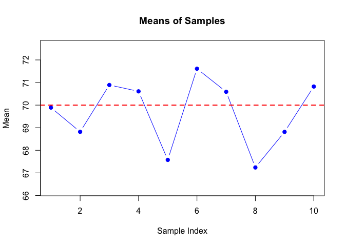
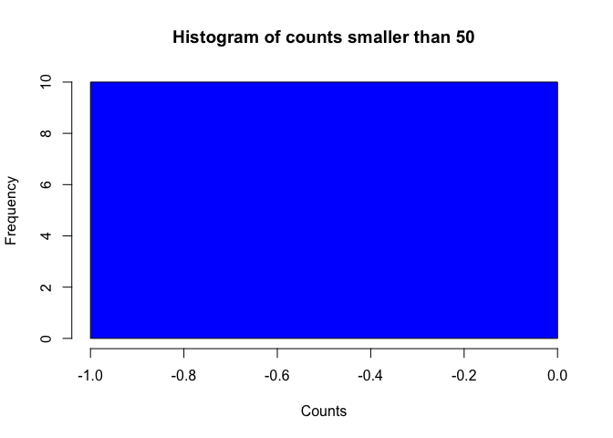

The goal of FinalProj561 is to generate several samples contains values follow a normal distribution. Then made statistical summary by number and graphs.
PkgDown URL: https://chenyihan1999.github.io/FinalProj561/
GitHub URL: https://github.com/CHENYIHAN1999/FinalProj561
Installation
You can install the development version of FinalProj561 like so:
devtools::install_github("CHENYIHAN1999/FinalProj561")
#> Downloading GitHub repo CHENYIHAN1999/FinalProj561@HEAD
#> ── R CMD build ─────────────────────────────────────────────────────────────────
#> * checking for file ‘/private/var/folders/r3/yrz1fzw94m3878_9vqn6sc080000gn/T/RtmphCZwyy/remotesfcbf3984fac/CHENYIHAN1999-FinalProj561-0a4cc1e/DESCRIPTION’ ... OK
#> * preparing ‘FinalProj561’:
#> * checking DESCRIPTION meta-information ... OK
#> * checking for LF line-endings in source and make files and shell scripts
#> * checking for empty or unneeded directories
#> * building ‘FinalProj561_0.0.0.9000.tar.gz’
#> Installing package into '/private/var/folders/r3/yrz1fzw94m3878_9vqn6sc080000gn/T/RtmpOYYRfr/temp_libpathd9352bb11025'
#> (as 'lib' is unspecified)Upon completion, you can run the following code (in R):
Example
This is a basic example which shows you how to solve a common problem:
library(FinalProj561)
result <- generate_samples(5, 10, 70, 3.3)
mean_result <- calculate_means_and_plot(result)
samples_result <- result$samples
count_result <- count_values_and_plot_histogram(samples_result, 50, "smaller")
Session info
This package was developed in the following environment
devtools::session_info()
#> ─ Session info ───────────────────────────────────────────────────────────────
#> setting value
#> version R version 4.3.1 (2023-06-16)
#> os macOS Monterey 12.5.1
#> system aarch64, darwin20
#> ui X11
#> language (EN)
#> collate en_US.UTF-8
#> ctype en_US.UTF-8
#> tz America/Los_Angeles
#> date 2024-06-06
#> pandoc 3.1.1 @ /Applications/RStudio.app/Contents/Resources/app/quarto/bin/tools/ (via rmarkdown)
#>
#> ─ Packages ───────────────────────────────────────────────────────────────────
#> package * version date (UTC) lib source
#> cachem 1.0.8 2023-05-01 [2] CRAN (R 4.3.0)
#> callr 3.7.3 2022-11-02 [2] CRAN (R 4.3.0)
#> cli 3.6.2 2023-12-11 [2] CRAN (R 4.3.1)
#> curl 5.2.0 2023-12-08 [2] CRAN (R 4.3.1)
#> desc 1.4.3 2023-12-10 [2] CRAN (R 4.3.1)
#> devtools 2.4.5 2022-10-11 [2] CRAN (R 4.3.0)
#> digest 0.6.33 2023-07-07 [2] CRAN (R 4.3.0)
#> ellipsis 0.3.2 2021-04-29 [2] CRAN (R 4.3.0)
#> evaluate 0.23 2023-11-01 [2] CRAN (R 4.3.1)
#> fastmap 1.1.1 2023-02-24 [2] CRAN (R 4.3.0)
#> FinalProj561 * 0.0.0.9000 2024-06-06 [1] Github (CHENYIHAN1999/FinalProj561@0a4cc1e)
#> fs 1.6.3 2023-07-20 [2] CRAN (R 4.3.0)
#> glue 1.7.0 2024-01-09 [2] CRAN (R 4.3.1)
#> highr 0.10 2022-12-22 [2] CRAN (R 4.3.0)
#> htmltools 0.5.7 2023-11-03 [2] CRAN (R 4.3.1)
#> htmlwidgets 1.6.4 2023-12-06 [2] CRAN (R 4.3.1)
#> httpuv 1.6.15 2024-03-26 [2] CRAN (R 4.3.1)
#> knitr 1.45 2023-10-30 [2] CRAN (R 4.3.1)
#> later 1.3.2 2023-12-06 [2] CRAN (R 4.3.1)
#> lifecycle 1.0.4 2023-11-07 [2] CRAN (R 4.3.1)
#> magrittr 2.0.3 2022-03-30 [2] CRAN (R 4.3.0)
#> memoise 2.0.1 2021-11-26 [2] CRAN (R 4.3.0)
#> mime 0.12 2021-09-28 [2] CRAN (R 4.3.0)
#> miniUI 0.1.1.1 2018-05-18 [2] CRAN (R 4.3.0)
#> pkgbuild 1.4.3 2023-12-10 [2] CRAN (R 4.3.1)
#> pkgload 1.3.4 2024-01-16 [2] CRAN (R 4.3.1)
#> processx 3.8.3 2023-12-10 [2] CRAN (R 4.3.1)
#> profvis 0.3.8 2023-05-02 [2] CRAN (R 4.3.0)
#> promises 1.2.1 2023-08-10 [2] CRAN (R 4.3.0)
#> ps 1.7.5 2023-04-18 [2] CRAN (R 4.3.0)
#> purrr 1.0.2 2023-08-10 [2] CRAN (R 4.3.0)
#> R6 2.5.1 2021-08-19 [2] CRAN (R 4.3.0)
#> Rcpp 1.0.12 2024-01-09 [2] CRAN (R 4.3.1)
#> remotes 2.4.2.1 2023-07-18 [2] CRAN (R 4.3.0)
#> rlang 1.1.3 2024-01-10 [2] CRAN (R 4.3.1)
#> rmarkdown 2.25 2023-09-18 [2] CRAN (R 4.3.1)
#> rstudioapi 0.16.0 2024-03-24 [2] CRAN (R 4.3.1)
#> sessioninfo 1.2.2 2021-12-06 [2] CRAN (R 4.3.0)
#> shiny 1.8.1.1 2024-04-02 [2] CRAN (R 4.3.1)
#> stringi 1.8.3 2023-12-11 [2] CRAN (R 4.3.1)
#> stringr 1.5.1 2023-11-14 [2] CRAN (R 4.3.1)
#> urlchecker 1.0.1 2021-11-30 [2] CRAN (R 4.3.0)
#> usethis 2.2.3 2024-02-19 [2] CRAN (R 4.3.1)
#> vctrs 0.6.5 2023-12-01 [2] CRAN (R 4.3.1)
#> xfun 0.41 2023-11-01 [2] CRAN (R 4.3.1)
#> xtable 1.8-4 2019-04-21 [2] CRAN (R 4.3.0)
#> yaml 2.3.8 2023-12-11 [2] CRAN (R 4.3.1)
#>
#> [1] /private/var/folders/r3/yrz1fzw94m3878_9vqn6sc080000gn/T/RtmpOYYRfr/temp_libpathd9352bb11025
#> [2] /Library/Frameworks/R.framework/Versions/4.3-arm64/Resources/library
#>
#> ──────────────────────────────────────────────────────────────────────────────